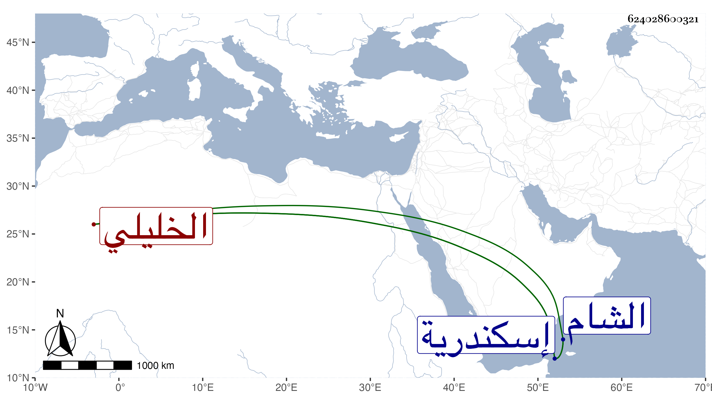

0902Sakhawi.DawLamic.ITO20230111-ara1.EIS1600.624028600321
Biography ID: 624028600321
745
قطلوبغا الخليلي . ولي الحجوبية في أيام برقوق ثم تعطل مدة إلى أن طلبه المؤيد وولاه نيابة إسكندرية واستمر بها محمود السيرة حتى مات في ذي الحجة سنة إحدى وعشرين وكأنه من مماليك جركس الخليلي أمير آخور ، وذكره شيخنا في أنبائه وقال : إن له ولأبيه ذكر في الحوادث ولم تطل مدته في السعادة واستقر بعده في نيابة إسكندرية ناصر الدين محمد بن العطار الدمشقي صهر كاتب السر نقلا له من دوادارية نائب الشام إليها .
